Faire un don
Matériel, antenne, studio : chaque don va directement à l'association.
Démo · aucun paiement. Lien vers la plateforme de dons à compléter.
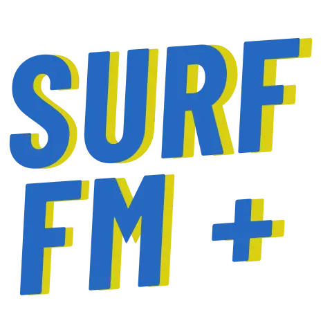
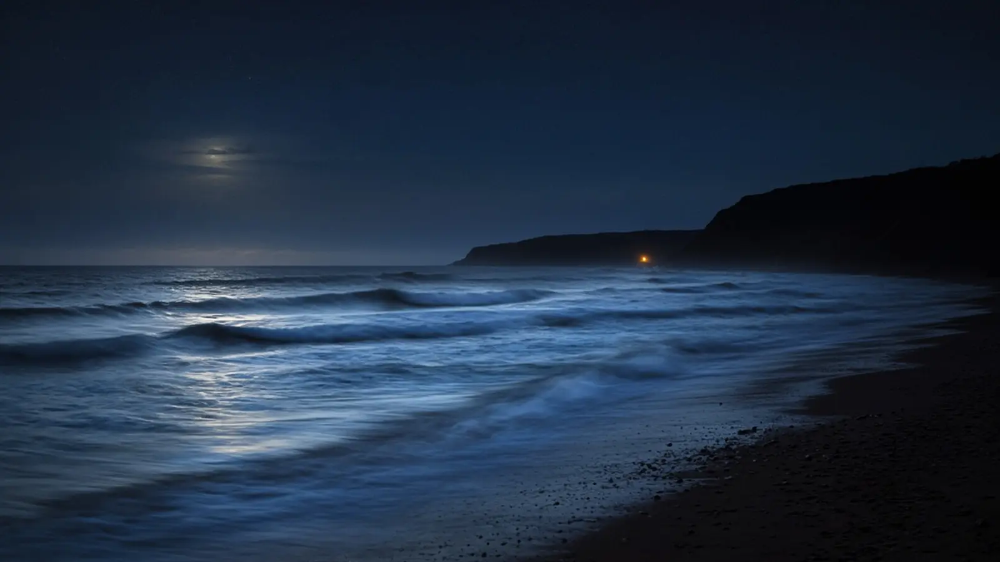
Radio associative · Soorts-Hossegor → Pays basque
La radio libre et bénévole de la glisse. Musique, surf et culture board, en FM, en DAB+ et sur le web.
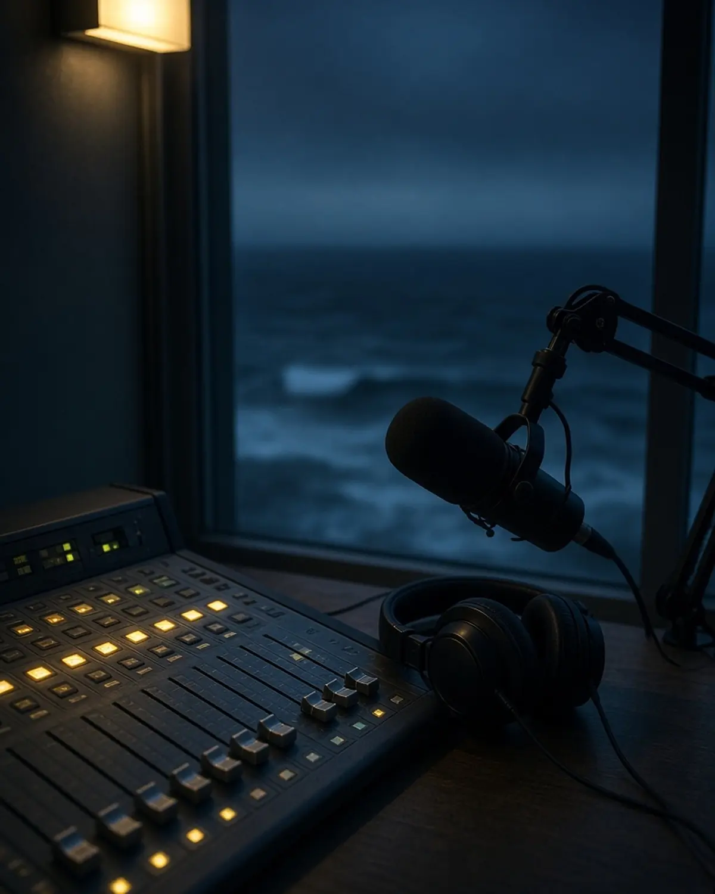
En ce moment
13:00 – 18:00 · ensuite Émission thématique
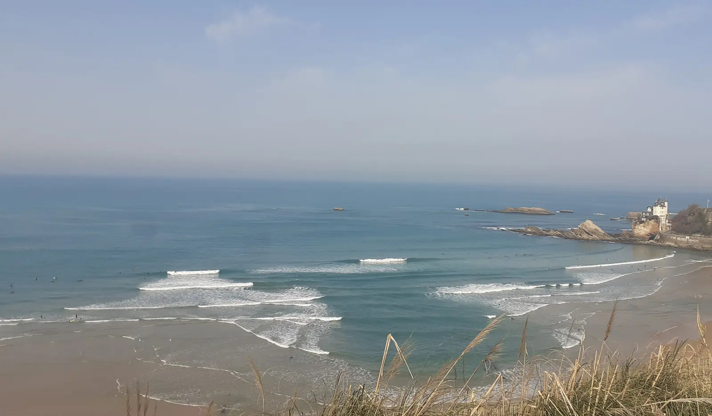
Manifeste
Une radio libre, indépendante et engagée. Des émissions de musique et de glisse, faites par des bénévoles qui assurent tout eux-mêmes, de la technique à l'antenne, jusqu'au café.
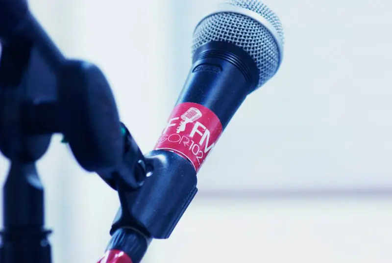
Nous capter
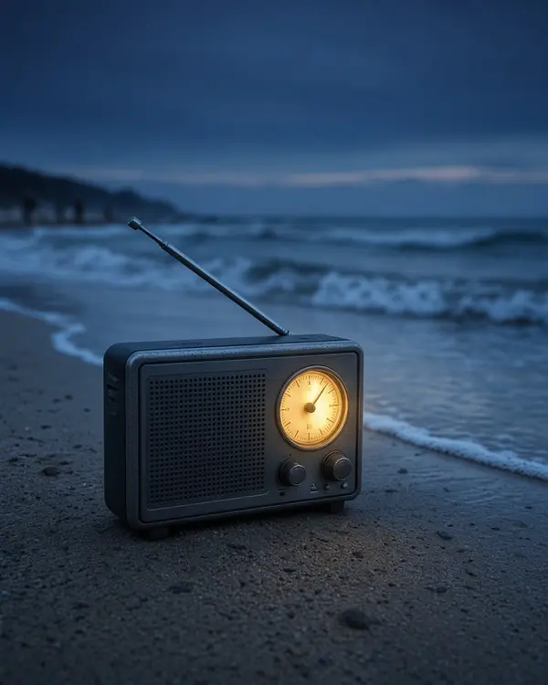
Autour de Soorts-Hossegor. Autorisation saisonnière, d'avril à octobre.
Infos 2015 · à confirmer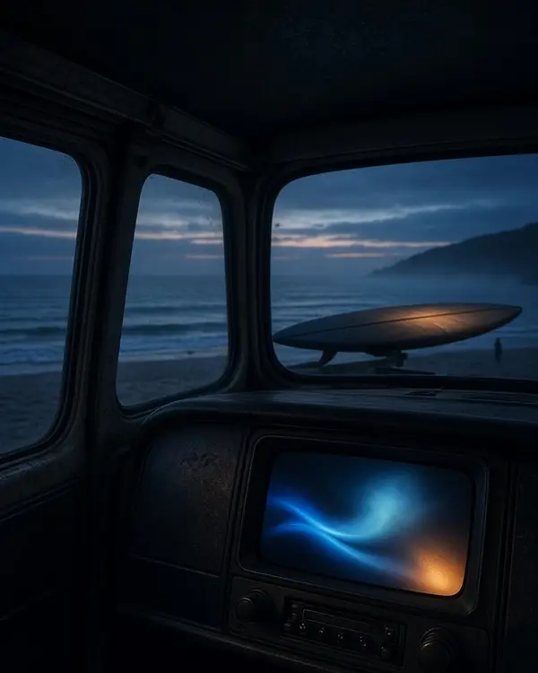
Autorisée par l'Arcom sur l'allotissement local de Bayonne, multiplex lancé en juin 2023.
Source · Arcom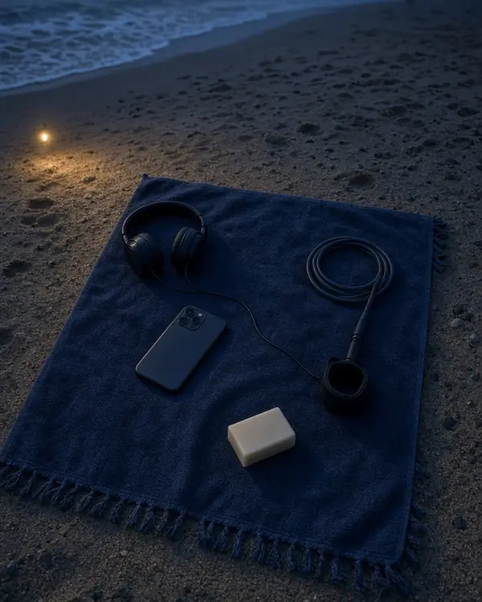
Le direct sur ce site, depuis n'importe où. La webradio a des auditeurs à l'étranger depuis ses débuts.
Lecteur en bas de l'écranÉmissions
Les émissions de la grille 2015, d'après le trombinoscope de l'équipe. à mettre à jour
Histoire
En 2015, la radio comptait déjà sept ans d'antenne. Date exacte à confirmer.

La radio édite son propre magazine papier, distribué avec ses autocollants 102.3.
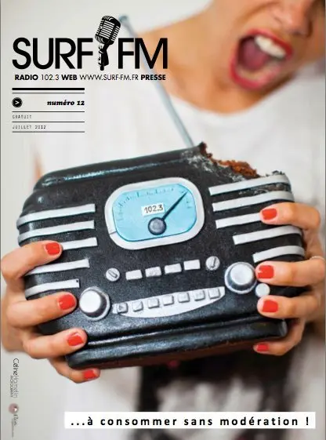
Une campagne de financement participatif réunit 8 257 €, soit 103 % de l'objectif, pour déménager l'antenne et améliorer la diffusion en FM, sur le web et sur mobile.
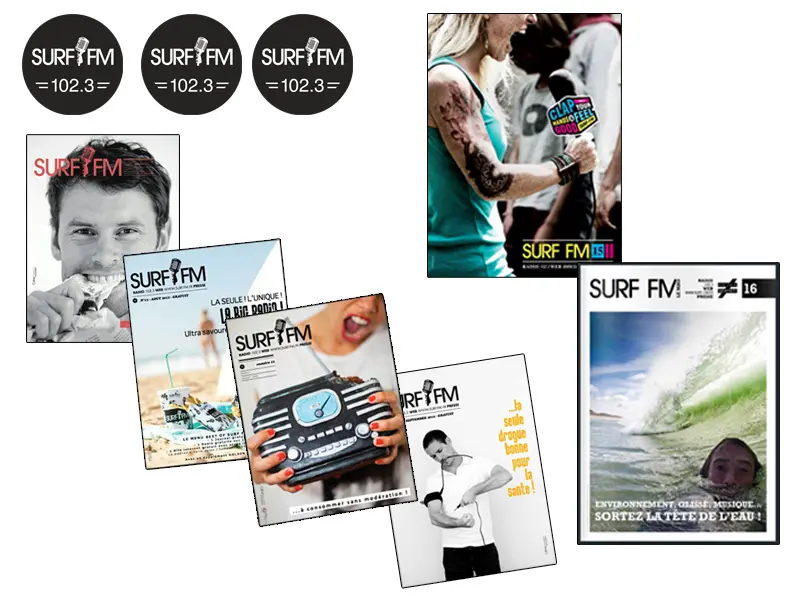
L'Arcom autorise Surf FM en radio numérique sur l'allotissement local de Bayonne, en catégorie A. Le multiplex démarre en juin 2023.
Soutenir
Matériel, antenne, studio : chaque don va directement à l'association.
Démo · aucun paiement. Lien vers la plateforme de dons à compléter.
Devenez membre de l'association et recevez votre carte d'adhérent.
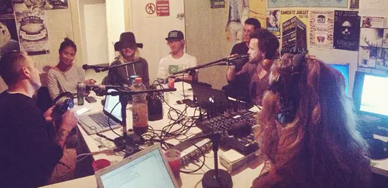
Technique, programmation musicale, animation, interviews, réseaux sociaux, comptabilité, partenariats : il y a de la place pour chacun.
Radio associative de catégorie A : publicité et parrainage restent sous 20 % des recettes. Des messages rares, donc bien entendus.
Nous écrire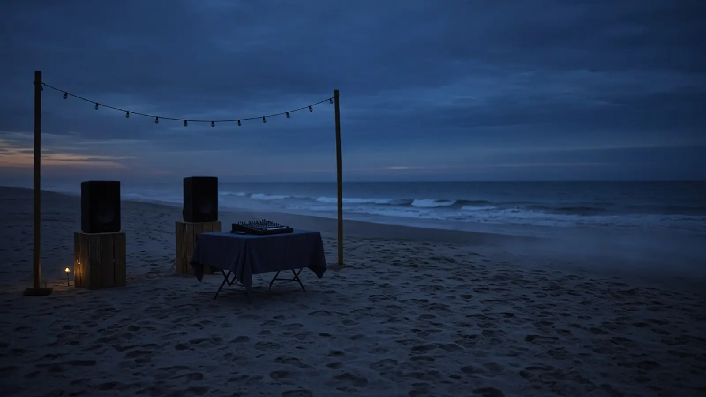
Agenda
Les animateurs mixent aussi en soirée : des DJ sets étaient proposés en 2015 pour les événements à moins de 50 km. à confirmer
Contact & dédicaces
Une dédicace, une info glisse, une idée d'émission : écrivez au studio.
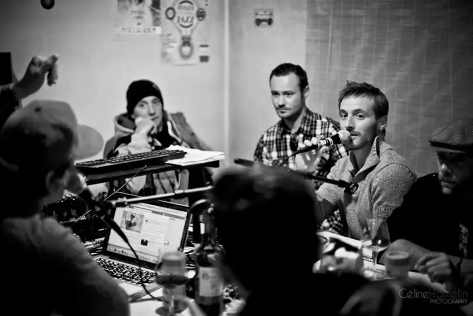